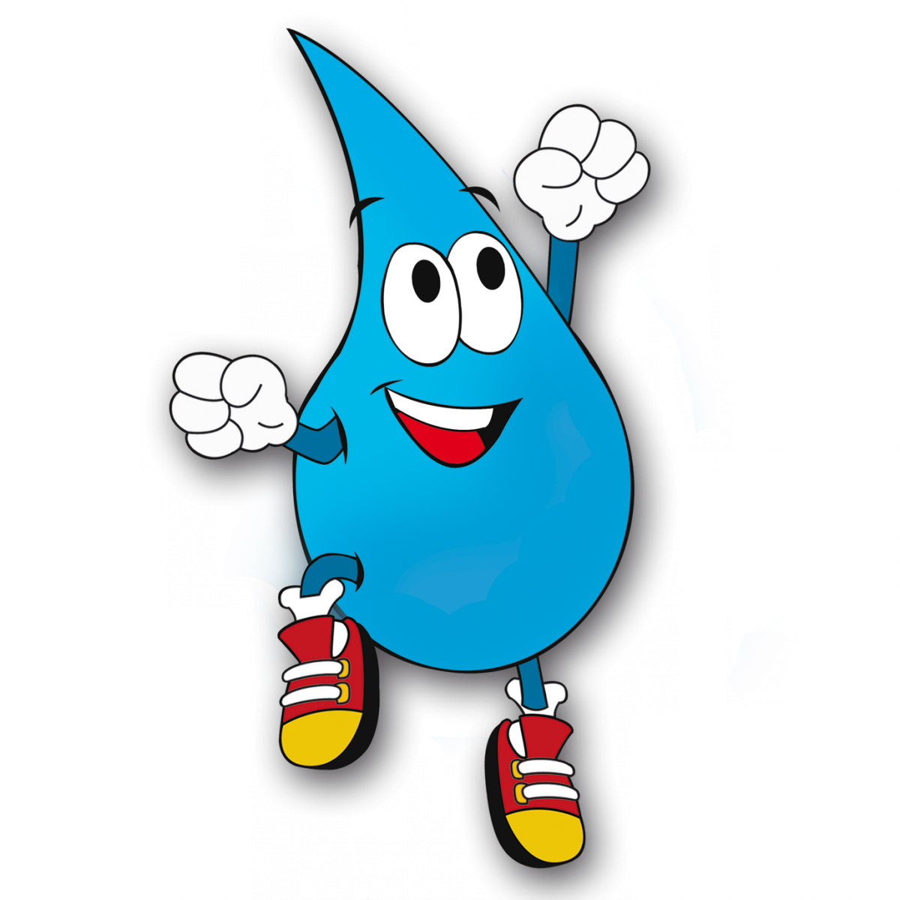

à água e saneamento seja garantido para todas e todos, independentemente de condição social, econômica e cultural.
O acesso inadequado à água pode ter como causas as demandas crescentes, a má gestão, a degradação da água pela poluição e a exploração das águas subterrâneas.De acordo com as Nações Unidas, no mundo, uma em cada três pessoas ainda não tem acesso a água potável e mais da metade da população não tem acesso ao saneamento.Assim, as Nações Unidas proclamaram uma década de ação pela água, chamada Década Internacional para a Ação: Água para o Desenvolvimento Sustentável (2018-2028).
O objetivo é promover novas parcerias, melhorar a cooperação e fortalecer a capacidade de implementar a Agenda 2030 para o Desenvolvimento Sustentável.

Com relação ao ODS6, o Brasil vem evoluindo, porém quase 35 milhões de brasileiros continua sem acesso a água e quase 100 milhões ao esgoto. Os desafios permanecem e a desigualdade de acesso é um deles. No Sudeste, 91,03% da população é abastecida com água tratada; enquanto no Norte, a porcentagem cai para 57,05%. Já em relação ao acesso aos esgotos, a região com maior porcentagem é a Sudeste, com 79,21%. No Norte, apenas 10,49% da população têm o esgoto coletado.
Recentemente, o novo Marco Legal de Saneamento Básico, aprovado dia 15 de julho de 2020, recebeu bastante atenção. A nova lei brasileira tem o objetivo de universalizar e qualificar os serviços no setor até 2033. A meta é garantir que 99% da população tenha acesso à água potável e 90% ao tratamento e coleta de esgoto. Uma medida polêmica é o estímulo de investimento privado através da abertura de licitação entre empresas públicas e privadas.
O Marco tem metas mais tímidas para um período mais extenso do que propõe o ODS6, que tem o objetivo de um acesso universal até 2030.
Fica claro, então, que ainda há muito a se fazer para garantir o direito humano à água e ao saneamento a todas e todos. O conhecimento da população sobre o tema e a vigilância sobre seus avanços são passos fundamentais nesse caminho!